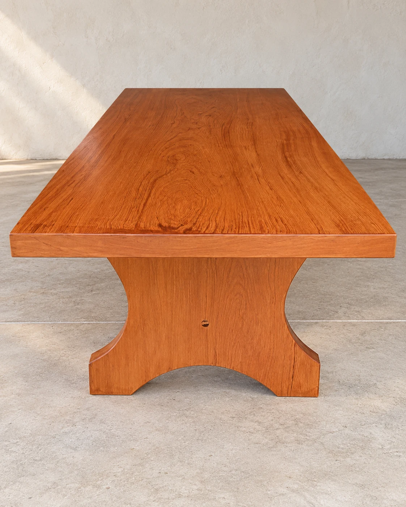
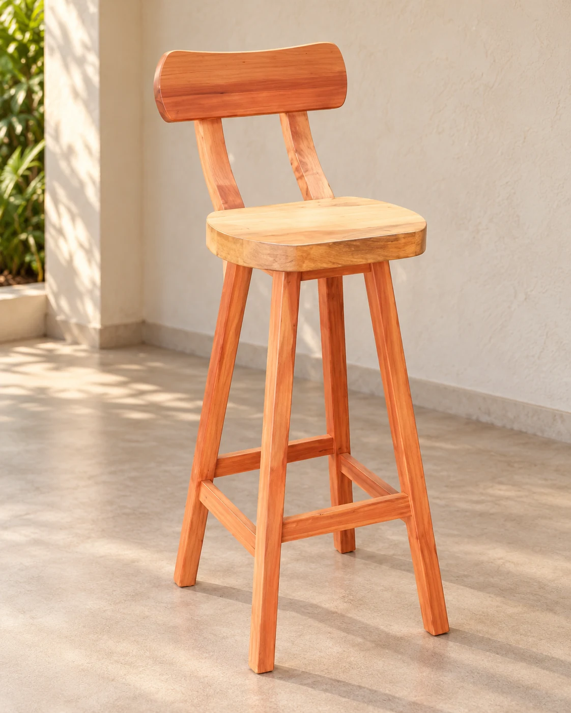
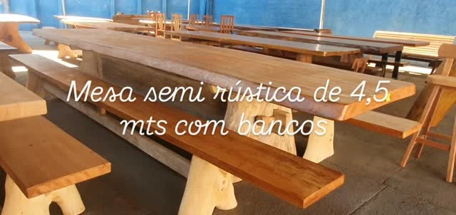
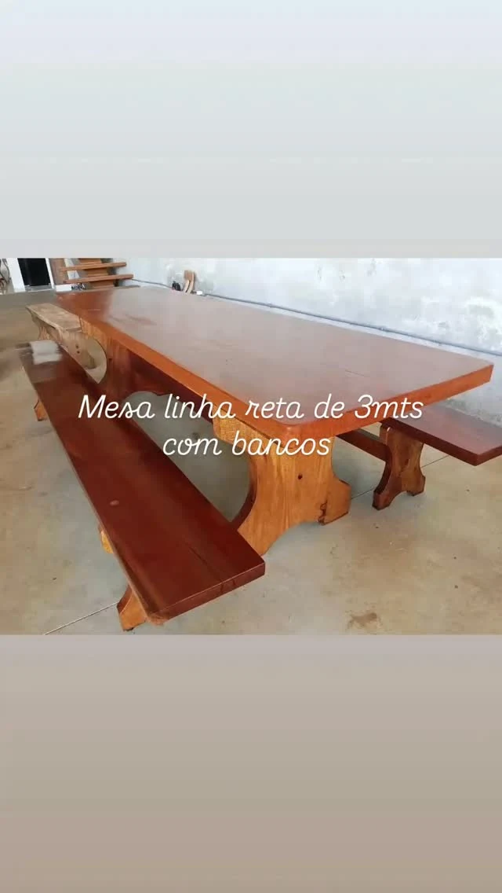
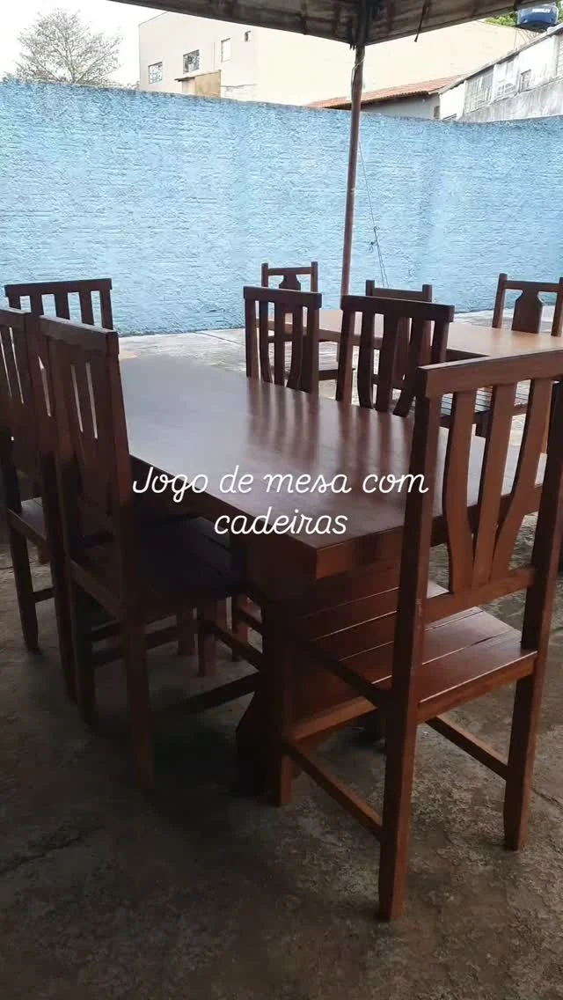
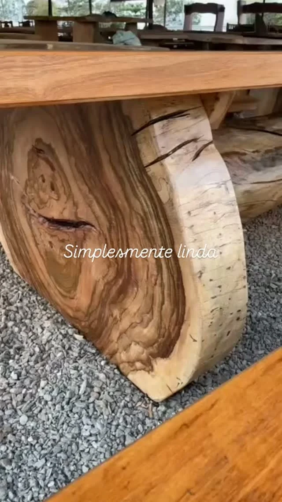
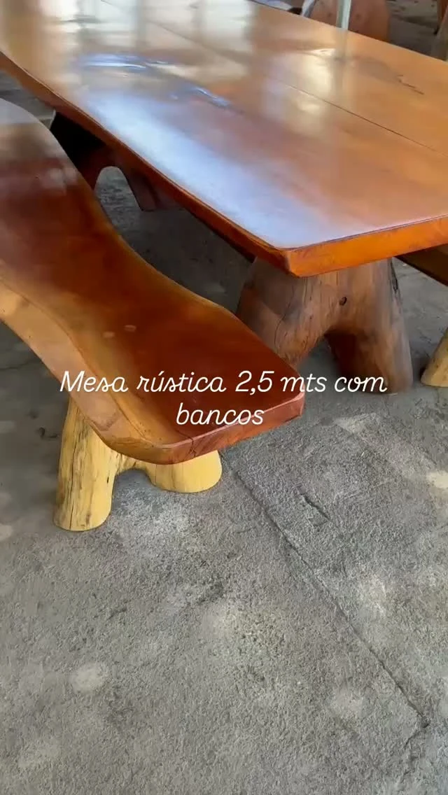

De Goiânia para o seu espaço
Madeira
para reunir.
Mesas para ficar mais um pouco.
Bancos, banquetas e formas que deixam a madeira aparecer.

Qual madeira
vai morar com você?
Tampos retos ou bordas naturais.
Uma mesa para reunir, um banco para chegar mais perto.
Seleção de referências publicadas pela loja. Consulte medidas, composição e disponibilidade.
8 itens nesta seleção



Ambientação com IA

Vista de detalhe

Vista de detalhe


Vista de detalhe

Vista de detalhe

Vista de detalheGostou do desenho de uma peça?
Use a referência para começar a conversa.
As curvas
já vêm da madeira.
Uma borda que acompanha o tronco. Os anéis no apoio de uma mesa. O recorte que abre espaço entre os pés.
São detalhes das peças publicadas pela Jacarandá. Veja de perto, escolha uma referência e conte onde você imagina usá-la.
Voltar às peçasUma peça, uma conversa
Comece pelo
seu espaço.
Escolha a referência e acrescente as medidas que você tem. A mensagem fica pronta para você revisar e conversar com a Jacarandá.
(62) 99206-9121A loja em Goiânia
Veja os veios.
Sinta as formas.
Quadra 208, Lote 05
Santo Pedro Ludovico, Goiânia – GO
CEP 74830-130
Combine sua visita diretamente com a loja.